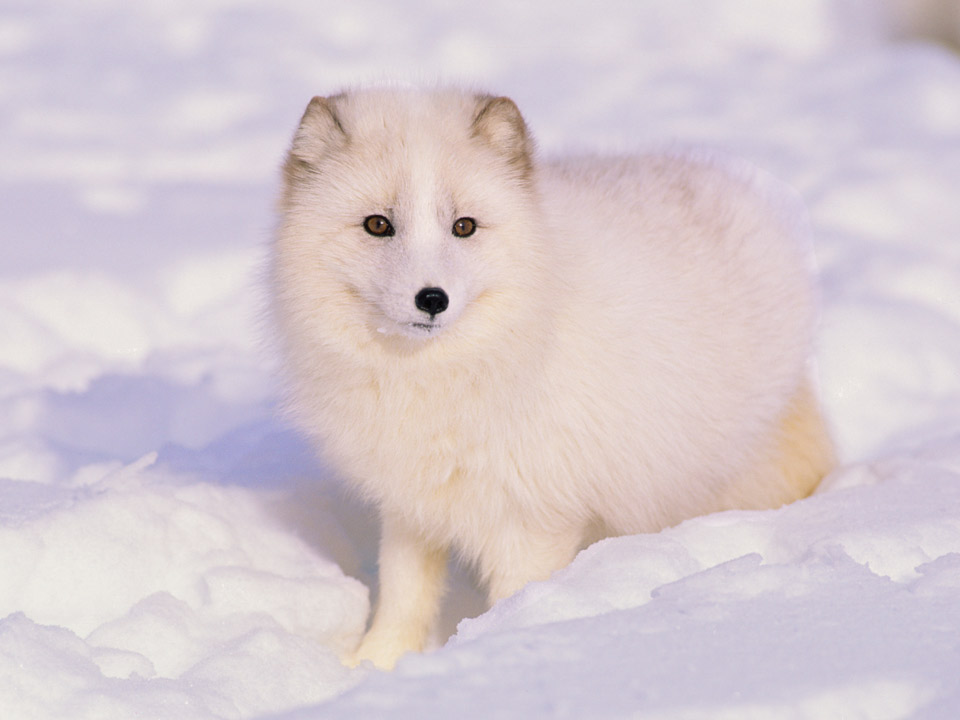
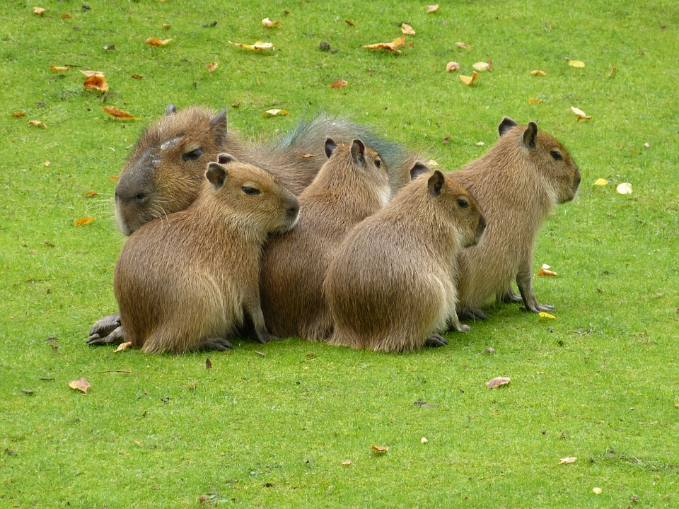
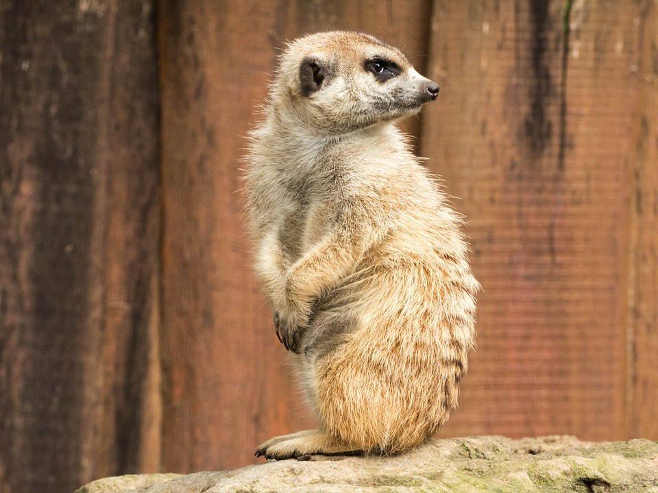
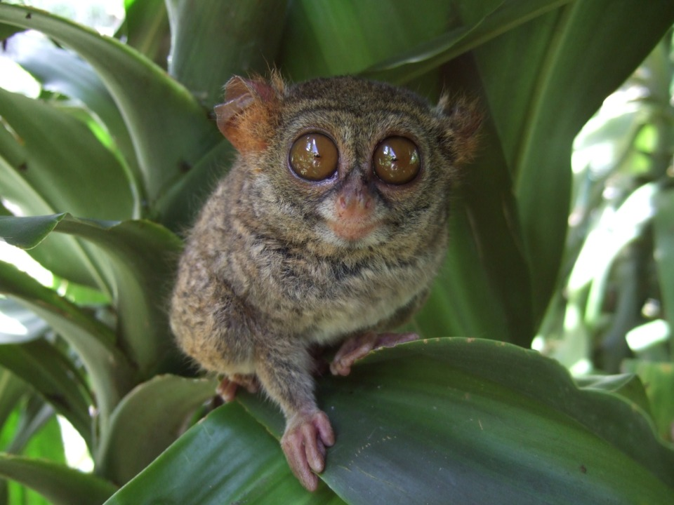
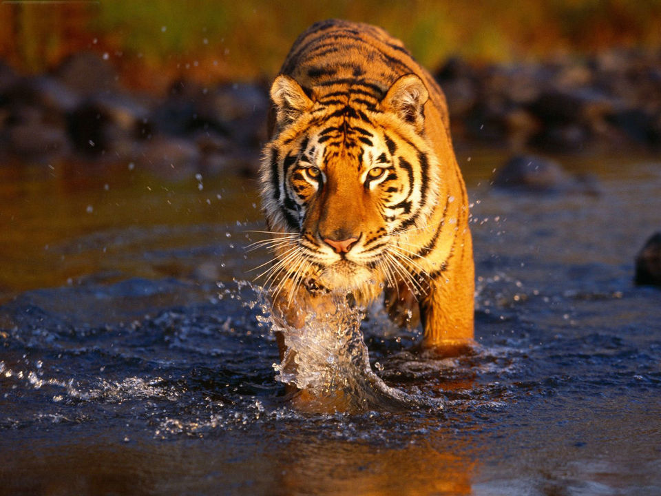

The Arctic fox (Vulpes lagopus), also known as the white fox, polar fox, or snow fox, is a small fox native to the Arctic regions of the Northern Hemisphere and common throughout the Arctic tundra biome.

The capybara (Hydrochoerus hydrochaeris) is the largest rodent in the world. Also called chigüire, it is a member of the genus Hydrochoerus, of which the only other extant member is the lesser capybara (Hydrochoerus isthmius).

Meerkats live in all parts of the Kalahari Desert in Botswana, in much of the Namib Desert in Namibia and southwestern Angola, and in South Africa.Squirrel monkeys live in the tropical forests of Central and South America in the canopy layer. Most species have parapatric or allopatric ranges in the Amazon, while S. oerstedii is found disjunctly in Costa Rica and Panama.

Tarsiers are haplorrhine primates of the family Tarsiidae, which is itself the lone extant family within the infraorder Tarsiiformes. Although the group was once more widespread, all the species living today are found in the islands of Southeast Asia.

The tiger (Panthera tigris) is the largest cat species, most recognizable for their pattern of dark vertical stripes on reddish-orange fur with a lighter underside.